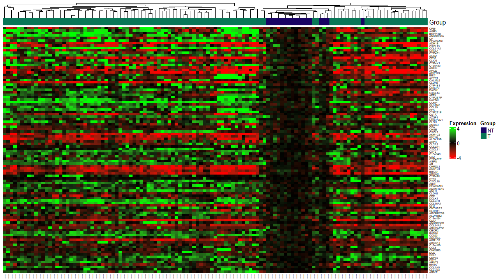
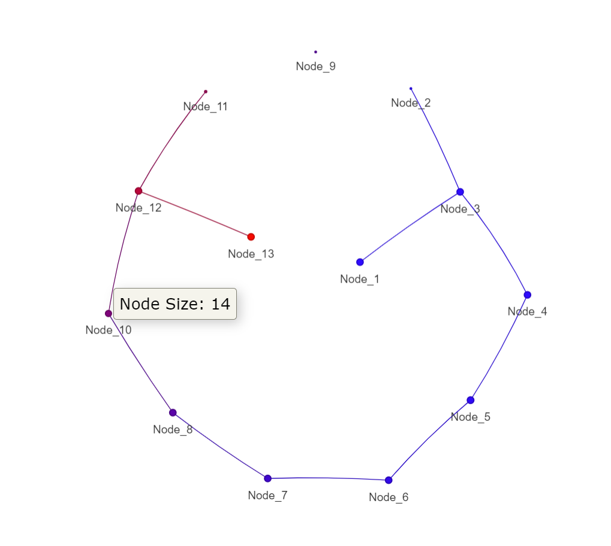

You can install the released version of GSSTDA from CRAN with:
install.packages("GSSTDA")And you can install the development version from GitHub with:
library(devtools)
devtools::install_github("jokergoo/ComplexHeatmap")
devtools::install_github("raquelbosch/GSSTDAdev")
library(GSSTDAdev)The “ComplexHeatmap” package is a Bioconductor package required for some functionalities of our R package. To ensure it is correctly installed, please follow these steps:
1. Install Bioconductor Manager: First, ensure that the Bioconductor manager package is installed. You can do this by running the following command in your R console: ```{r} if (!requireNamespace(“BiocManager”, quietly = TRUE)) install.packages(“BiocManager”)
*2. Install ComplexHeatmap*: Once you have the Bioconductor manager installed, you can install the "ComplexHeatmap" package by executing:
```{r}
BiocManager::install("ComplexHeatmap")3. Load the package: After installation, load “ComplexHeatmap” into your R session to verify that the installation was successful: {r} library(ComplexHeatmap)
4. Check for updates: Bioconductor packages are updated regularly. It’s a good practice to check for updates to ensure you have the latest version of “ComplexHeatmap”. You can check for updates and install them by running: {r} BiocManager::install() # This updates all installed Bioconductor packages
By following these instructions, you should have the “ComplexHeatmap” package installed and ready for use with our package. If you encounter any issues during installation, please consult the Bioconductor support site or reach out for help through the community forums
See GSSTDA documentation for further information. {r} data("full_data") data("survival_time") data("survival_event") data("case_tag")
The gene_select_surv_type parameter is used to choose the option on how to select the genes to be used in the calculation of the filter function. Choose between “Abs” and “Top_Bot”. The percent_gen_select_for_fun_filt parameter is the percentage of genes to be selected to be used for this calculation.
The gene_select_mapper_metric parameter is used to choose the metric to be used in the selection of the genes for Mapper. The percent_gen_select_for_mapper parameter is the percentage of genes to be selected to be used in Mapper. {r} # Gene selection information gene_select_surv_type <- "Top_Bot" percent_gen_select_for_fun_filt <- 5 # Percentage of genes to be selected for filter funcion gene_select_mapper_metric <- "mad" percent_gen_select_for_mapper <- 10 # Percentage of genes to be selected for Mapper
For the mapper, it is necessary to know the number of intervals into which the values of the filter functions will be divided and the overlap between them (). Default are, the root of the number of individuals included as input to Mapper, and 40, respectively. The set of overlapping intervals, called covering, can be constructed in two ways: the “classic” option and the “uniform” option. We recommend, and it is the fault, the “uniform” option. It is also necessary to choose the type of distance to be used for clustering within each interval (choose between correlation (“cor”), default, and euclidean (“euclidean”)) and the clustering type (choose between “hierarchical”, default, and “PAM” (“partition around medoids”) options).
For hierarchical clustering only, you will be asked by the console to choose the mode in which the number of clusters will be chosen (choose between “silhouette”, default, and “standard”). If the mode is “standard” you can indicate the number of bins to generate the histogram (, by default 8). If the clustering method is “PAM”, the default method will be “silhouette”. Also, if the clustering type is hierarchical you can choose the type of linkage criteria ( choose between “single”, “complete”, “average” and “ward.D”).
```{r} #Mapper information num_intervals <- 10 percent_overlap <- 40 type_covering <- “uniform” distance_type <- “correlation” clustering_type <- “hierarchical” linkage_type <- “single” # only necessary if the type of clustering is hierarchical optimal_clustering_mode <- “silhouette” # num_bins_when_clustering <- 10 # only necessary if the type of clustering is hierarchical # and the optimal_clustering_mode is “standard” # (this is not the case)
The package allows the various steps required for GSSTDA to be performed separately or together in one function.
### OPTION #1 (the three blocks of the G-SS-TDA process are in separate function):
#### First step of the process: dsga.
This analysis, developed by Nicolau *et al.* is independent of the rest of the process and can be used with the data for further analysis other than mapper. It allows the calculation of the "disease component" which consists of, through linear models, eliminating the part of the data that is considered normal or healthy and keeping only the component that is due to the disease.
```{r}
dsga_object <- dsga(full_data, case_tag)
This function selects the genes to be used in the Mapper according to their variability within the database.
On the other hand, the genes with the strongest association with survival are selected. Using these genes, a filter function value is calculated for each sample, which captures the survival associated with each patient.
{r} gene_selection_object <- gene_selection(dsga_object, survival_time, survival_event, gene_select_surv_type, percent_gen_select_for_fun_filt, gene_select_mapper_metric, percent_gen_select_for_mapper)
Another option to execute the second step of the process. Create a object “data_object” with the require information. This could be used when you do not want to apply dsga.
```{r} # Create data object data_object <- list(“full_data” = full_data, “case_tag” = case_tag) class(data_object) <- “data_object”
#Select gene from data object gene_selection_object <- gene_selection(data_object, survival_time, survival_event, gene_select_surv_type, percent_gen_select_for_fun_filt, gene_select_mapper_metric, percent_gen_select_for_mapper)
#### Third step of the process: Create the mapper object with disease component matrix with only the selected genes and the filter function obtained in the gene selection step.
Mapper condenses the information of high-dimensional datasets into a combinatory graph that is referred to as the skeleton of the dataset. To do so, it divides the dataset into different levels according to its value of the filtering function. These levels overlap each other. Within each level, an independent clustering is performed using the input matrix and the indicated distance type. Subsequently, clusters from different levels that share patients with each other are joined by a vertex.
This function is independent from the rest and could be used without having done dsga and gene selection
In the PAD-S, only pathological samples are included in the Mapper graph.
```{r}
mapper_object <- mapper(data = gene_selection_object[["case_genes_disease_component"]],
filter_values = gene_selection_object[["filter_values"]],
num_intervals = num_intervals,
percent_overlap = percent_overlap,
type_covering = type_covering,
distance_type = distance_type,
clustering_type = clustering_type,
linkage_type = linkage_type,
optimal_clustering_mode = optimal_clustering_mode,
dim_reduction = FALSE)
Obtain information from the dsga block created in the previous step.
This function returns the 100 genes with the highest variability within the dataset and builds a heat map with them. {r} dsga_information <- results_dsga(dsga_object[["matrix_disease_component"]], case_tag) print(dsga_information)

Obtain information from the mapper object created in the G-SS-TDA process. {r} print(mapper_object)
Plot the mapper graph. {r} plot_mapper(mapper_object)

It creates the GSSTDA object with full data set, internally pre-process using the dsga technique, and the mapper information. ```{r} gsstda_obj <- gsstda(full_data = full_data, survival_time = survival_time, survival_event = survival_event, case_tag = case_tag, gene_select_surv_type = gene_select_surv_type, percent_gen_select_for_fun_filt = percent_gen_select_for_fun_filt, gene_select_mapper_metric = gene_select_mapper_metric, percent_gen_select_for_mapper = percent_gen_select_for_mapper, num_intervals = num_intervals, percent_overlap = percent_overlap, type_covering = type_covering, distance_type = distance_type, clustering_type = clustering_type, linkage_type = linkage_type, optimal_clustering_mode = optimal_clustering_mode, dim_reduction = FALSE)
Obtain information from the dsga block created in the previous step.
This function returns the 100 genes with the highest variability within the dataset and builds a heat map with them.
```{r}
dsga_information <- results_dsga(gsstda_obj[["matrix_disease_component"]], case_tag)
print(dsga_information)Obtain information from the mapper object created in the GSSTDA process. {r} print(gsstda_obj[["mapper_obj"]])
Plot the mapper graph. {r} plot_mapper(gsstda_obj[["mapper_obj"]])